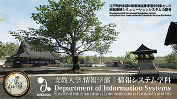

COPYRIGHT © BUNKYO UNIVERSITY ALL RIGHTS RESERVED
ゲームスクールコーナー http://www.bunkyo.ac.jp/
文教大学は、神奈川県の湘南校舎と埼玉県の越谷校舎に設置された、7学部（教育学部・人間科学部・文学部・情報学部・国際学部・健康栄養学部・経営学部）と大学院5研究科で構成されている総合大学です。今回は、情報学部情報システム学科で実施されているプロジェクト型演習授業である「プロジェクト演習（2、3年次）」における学生成果物について展示します。これは学生がチームで計画的にプロジェクト開発を行うものです。
出展タイトル※掲載情報は予告無く変更となる場合がございます。あらかじめご了承ください。
| 出展タイトル | ジャンル | 発売日/配信日 | プラットフォーム | VR対応 | 備考欄 |
|---|---|---|---|---|---|
| 江戸時代末期の宿場町街路景観シミュレーションシステム | アクション シミュレーション |
PC | HTC Vive | ||
| 脈拍数に応じて演出が変化するホラーゲームデザイン | アクション アドベンチャー |
PC | Oculus Rift | ||
| 音階・音圧・音色を色相・彩度・明度に対応させたお絵かきアプリケーション | その他 開発ツール |
PC Android |
|||
| 小・中学生向けプログラミング学習支援アプリケーション | パズル その他 |
Android |